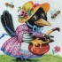
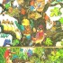
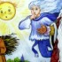
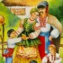
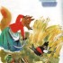

Що ж таке казка?
Казка – фольклорний розповідний твір про вигадані, а часто й фантастичні події.
За своїм змістом і поетикою казки близько стоять до сказань, легенд, билин і баладних пісень. Вони широко використовують пісні, приказки й прислів’я, загадки й замовляння. Термін “казка” походить від слова казати (казки розказуються). За часом виникнення казки належать до найдавніших форм народної творчості. Вони дуже популярні серед усіх народів світу й відзначаються захоплюючим сюжетом.
Казки є одним з найпоширеніших видів оповідальної народної творчості. На земній кулі нема жодного народу, який би не створив свого казкового епосу. Кожен народ має свої казки і сюжети, в якій він вкладає свою життєву і соціальну філософію, зумовлену побутом та історією.👇Щоб краще познайомитися з цією темою, пропоную вам прочитати декілька українських казок👇

Сорока-білобока
(українська народна казка)

Як птахи царя собі вибирали
(українська народна казка)

Казка про Сонце, Мороз і Вітер
(українська народна казка)

Золота пшениця
(українська народна казка)
Без труда нема плода
(українська народна казка)
